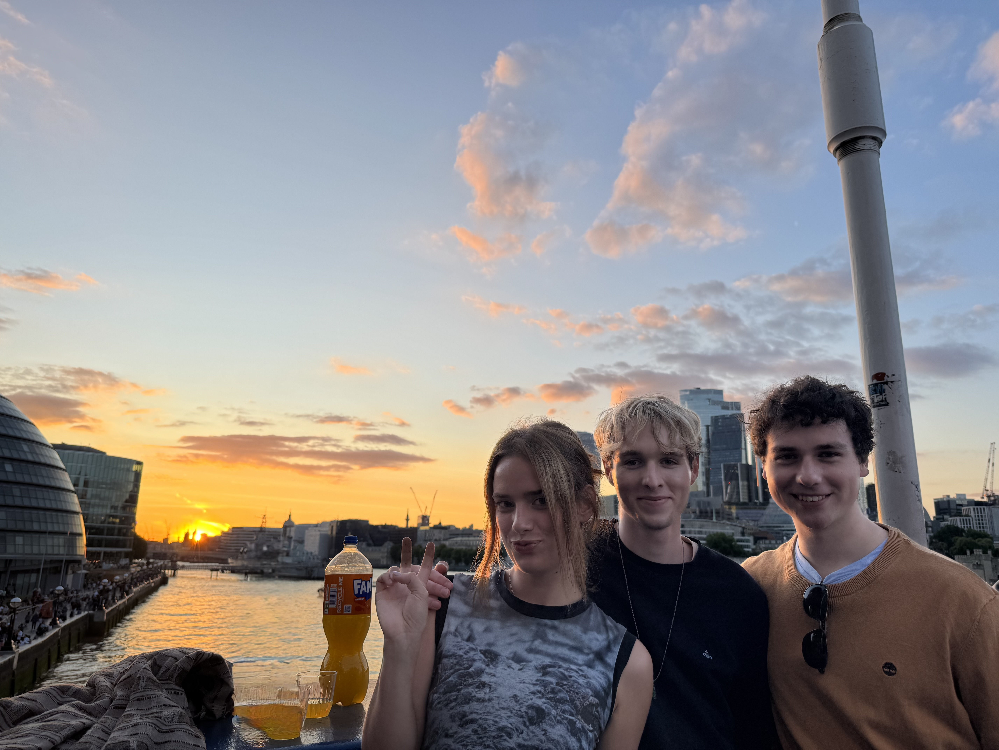
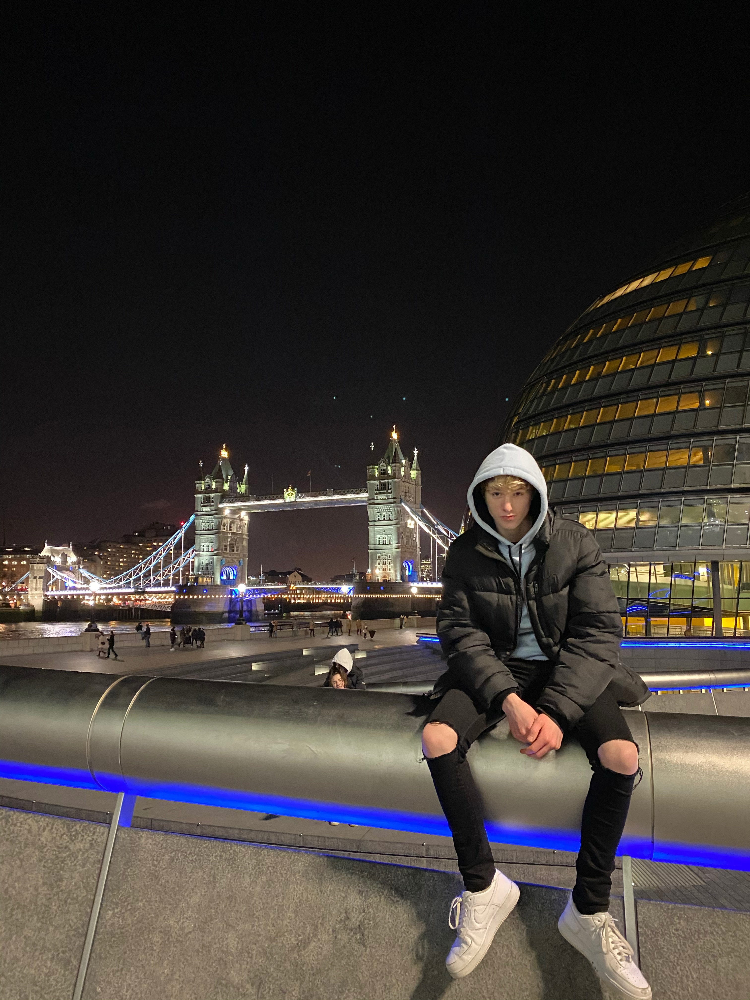
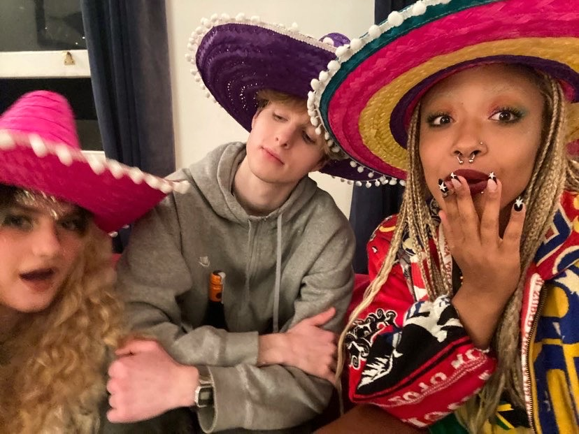
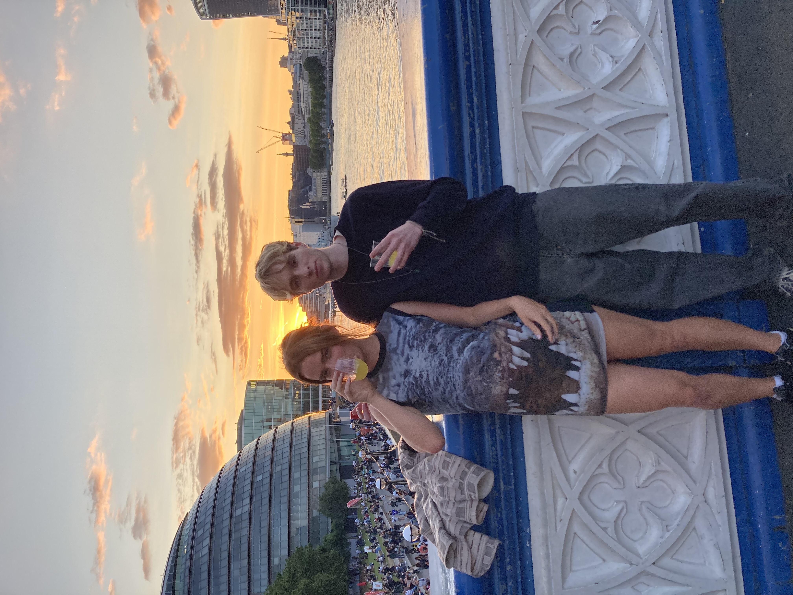

Hi, I'm Jack Davies.
Computer Science Undergraduate | Software Developer



About Me
I am a Computer Science student at the University of Nottingham. I am passionate about technology and how it can be used to benefit the world, taking pride in my work and dedicating time to achieve the highest quality.
Outside of academics, I swam competitively for 11 years, training up to 7 times a week, which taught me extreme discipline. I also enjoy challenging expeditions, such as completing the 11-day Offa's Dyke path, which developed my resilience and ability to solve problems as part of a team.
Core Skills
Languages: Python, Java, HTML/CSS/JavaScript, C, C++, ARM Assembly.
